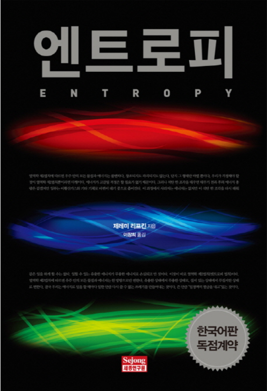

마음이 자라는 책읽기
독서는 우리의 마음을 아름답고 풍성하게 가꿔줍니다. 다음 10가지 종류의 책은 다양한 분야에서 뛰어난 작품으로 인정 받고 있는 책들 중 하나로 꼭! 읽어봐야 할 책들입니다.
책 제목을 클릭하시면 책 소개 사이트로 연결됩니다.
수학이 필요한 순간(김민형)
과학자도 모르는 위험한 과학기술(피터 타운센드)
엔트로피(제레미 리프킨)
곰돌이 푸, 행복한 일은 매일 있어(곰돌이 푸)
협력하는 괴짜(이민화)
기업가정신 2.0(이민화)
위대한 개츠비(F.스콧 피츠제럴드)
Old Man and the Sea(어니스트 헤밍웨이)